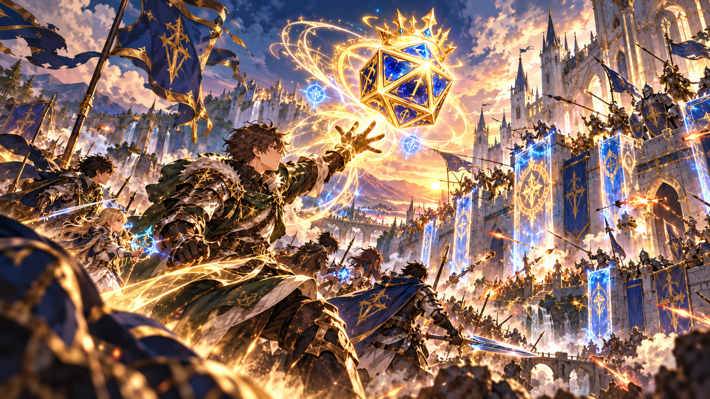
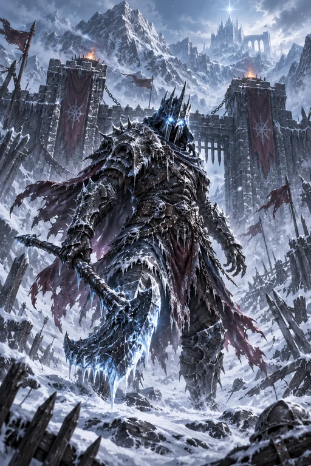

FREE RPG TOOL · NO ACCOUNT REQUIRED
RPG Battle Simulator
Choose a KardRune hero and fight a monster in a quick, browser-based D20 turn-based battle.

 SamHP —
SamHP —D20

Runic HuskHP —Start a duel to roll the D20.
HOW IT WORKS
This lightweight battle simulator is a separate demonstration, not KardRune’s official battle engine. Each round rolls a D20 and compares the result plus an attack bonus against the opponent’s defense; a natural 20 is critical and a natural 1 misses. The illustrated hero and monster art is reused from the KardRune website, but the example HP, attack and defense stats are independent of the game.
FREQUENTLY ASKED QUESTIONS
Does this affect my game progress?
No. This demo runs only inside your browser and never touches your KardRune save or Conquest ranking.
What decides a hit?
The simulated attack connects when a D20 plus attack bonus reaches the opponent’s defense. Natural 1 always misses; natural 20 is a critical hit.